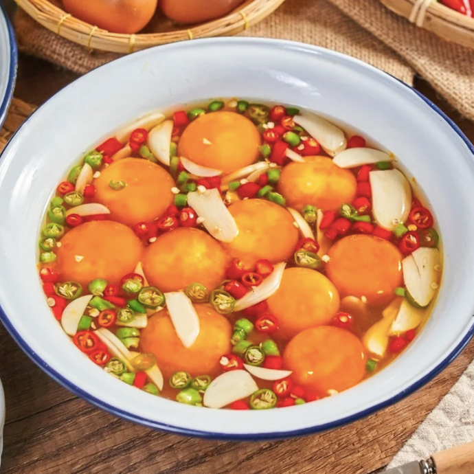

เมนูไข่ดองน้ำปลา

เติมความนัวกันหน่อยกับ “ไข่ดองน้ำปลา” ที่หลาย ๆ
คนอาจจะใช้เป็นไอเดียในการทำเมนูอาหารคีโตง่าย ๆ แถมยังประหยัด แค่มีไข่ไก่
น้ำปลา พริก และกระเทียม เมนูหอมนัวนี้ก็พร้อมเสิร์ฟแล้วจ้า
วัตถุดิบ
- ไข่ไก่ 15 ฟอง
- น้ำปลาดี 50 กรัม
- น้ำสะอาด 500 มิลลิกรัม
- น้ำตาลมะพร้าว 25 กรัม
- พริกขี้หนู 20 กรัม
- พริกจินดาแดง 20 กรัม
- กระเทียมจีน 50 กรัม
วิธีทำ
- ตั้งกระทะใส่น้ำเปล่า น้ำปลา และน้ำตาลทรายให้ละลายเข้ากัน จากนั้นพักไว้ให้เย็น
- ตอกไข่ไก่แยกเอาเฉพาะไข่แดง ใส่ลงในน้ำดองที่เตรียมไว้ ก่อนโรยด้วยกระเทียม พริกขี้หนูและพริกจินดาแดง นำพลาสติกแรปปิดคลุม แช่เย็นไว้เป็นเวลา 4 ชั่วโมง
- เมื่อครบกำหนดเวลาตักขึ้นจัดเสิร์ฟ พร้อมน้ำจิ้มซีฟู้ด ข้าวสวยและสาหร่าย หรือเครื่องเคียงตามชอบ